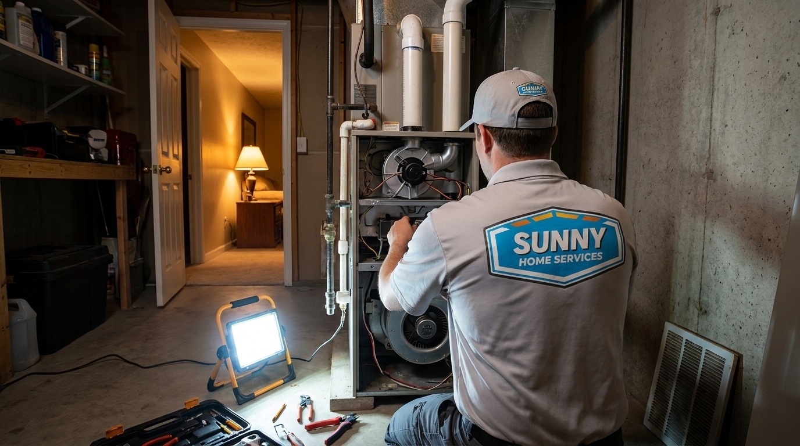

385.853.8116


Due to our proximity to the beautiful Wasatch Range, our winters in West Jordan are brutally cold, and having a working furnace is essential. Having a heating system breakdown during winter can leave your home in immediate danger. This is why Sunny Home Services offers prompt emergency heating repair in West Jordan. We pride ourselves on fast response times, customer care, and satisfaction for every emergency job. Learn more about our comprehensive emergency heating services.

West Jordan sits at roughly 4,300 feet in elevation, and the Salt Lake Valley's inversion conditions can make already-cold winters feel even more punishing. During inversion events, which can last days or even weeks, cold air stays trapped on the valley floor, keeping temperatures well below freezing. When your home is in that cold spot, and your furnace breaks down unexpectedly, the indoor temperature can drop dangerously fast.
If your heater fails in the middle of January, this kind of heating emergency can't wait until normal business hours. Sunny Home Services' emergency furnace repair covers all of West Jordan and the surrounding Wasatch Front.
From the moment you call our emergency dispatch team, we move quickly to send a technician to diagnose the problem and get your heat back on the same day. We arrive with fully stocked trucks loaded with major components to handle almost every furnace failure on the spot.

When the temperature starts to drop and the cold winter mountain winds arrive in West Jordan, it’s important to know if your heating issue is a true emergency or a normal repair. Call Sunny Home Services for emergency furnace services if:
If you’re unsure whether your heating issue qualifies as an emergency, it never hurts to call Sunny Home Services. We’ll determine whether we need to assess the problem immediately or if it can wait until morning.
Sunny Home Services handles the full range of heating emergencies for West Jordan homeowners, including:
We also specialize in working on heat pump repairs for West Jordan homeowners. Heat pumps are becoming increasingly popular due to their eco-friendly nature and ability to provide heating and cooling for the home.
When you call us for emergency heating services, our dispatch will ask you a few quick questions. They’ll ask:
After those questions are answered and we have determined that this is an emergency, we’ll send a technician to diagnose the issue and provide prompt repairs. We’ll always explain the source of the issue and what we need to do to restore heat.
Before leaving, our technicians will also take a few minutes to share any observations about your system's overall condition so you’re not caught off guard by another breakdown. Most heaters last 15 to 20 years, and we provide guidance on whether it makes sense to repair it or start planning to replace the system in a few years.
At Sunny Home Services, we believe an informed homeowner is a well-served homeowner, and that commitment to communication is something every one of our customers can count on.
While you wait for one of our team members to arrive, there are a few steps you can take to stay safe and help speed up the emergency service.
We have over 30 years of HVAC experience in the Wasatch Front. West Jordan homeowners continue to choose Sunny Home Services for reasons like:
At Sunny Home Services, we combine enterprise-grade scheduling, dispatch, and job documentation technology with upfront flat-rate pricing, fast, guaranteed emergency response, proactive communication (arrival texts and technician bios), and a team hired and trained for trustworthiness.

With overnight temperatures that regularly fall well below freezing from November through March, a heating failure in West Jordan is never a minor inconvenience but a safety concern.
Sunny Home Services is ready to respond with the speed, skill, and professionalism your household deserves. Call us today or book online for any heating emergency, and we’ll do everything we can to restore your heat as quickly as possible.